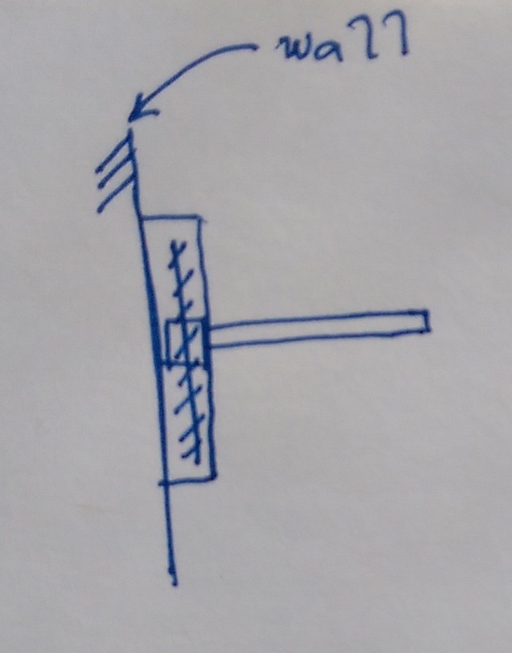
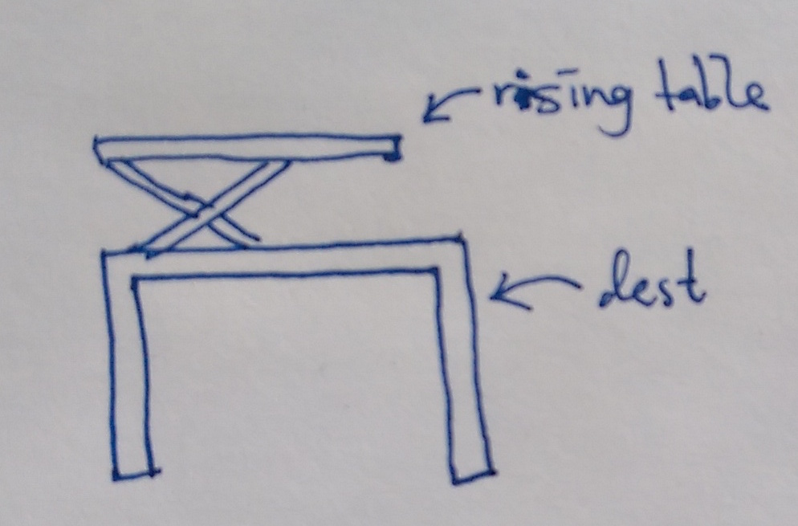
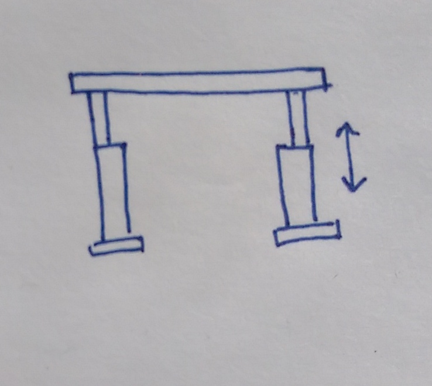
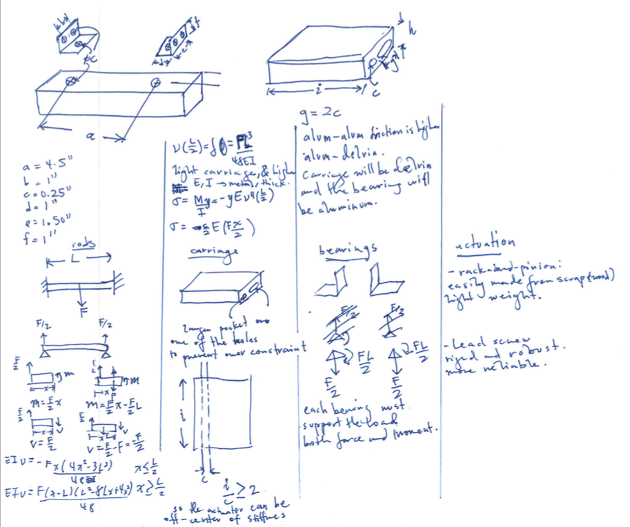
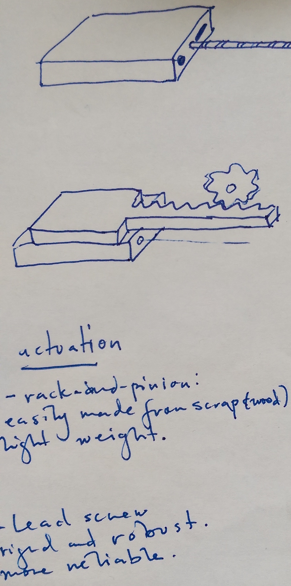

This year, I will be designing, building and testing a table that can transform from sitting position to standing position. I think this project will be fun, educative and will be a great opportunity to apply new concepts of precision and error apportionment.
The requirements for my desk is to be able to support the weight of a laptop, a few books and a personal leaning on it. It should be able to transform between position with the simple push of a button.
| Functional Req. | Design Para. | Analysis | References | Risks | Counter-Meas. |
|---|---|---|---|---|---|
| Electronically actuated | |||||
| Support weight of items and person | |||||
| Two positions | |||||
| Little deflection | |||||
| Within budget | |||||
| Easy mount, portable |
The loads on the table will mostly be due to books, computer and a person partially leaning on it. It will also have to support it’s own weight. Given an accuracy of 1 cm, the require stiffness is about of 20 kN/m
Strategy 1: Wall mounted
 This strategy is to have a mount attached to the wall and some sort of vertical actuation to allow the table to move up and down the wall. Wall mounting would be good though it would require wall modifications for secure attachment.| Functional Requirements | Design Parameters | Analysis | References | Risks | Counter-Measures |
|---|---|---|---|---|---|
| Electronically actuated | Stepper motor and leadscrew design | Torque, power analysis | PMD, datasheets | Cables, Connections | Cable ties, proper fastening |
| Support weight of items and person | Be able to handle 200N | Bearing and structure mechanics | PMD, Material Properties | ~ | ~ |
| Two positions | Two resting positions | Controls, Mechanics | PMD, Datasheets | ~ | ~ |
| Little deflection | Decrease error and deflections | Beam-bending, compliance analysis | Euler-Bernoulli Beam Theory, PMD | Increased weight, cost | Use better geometry and exercise wisdom |
| Within budget | Cost less than $100 | Recycle/Re-used materials | Re-use material sites, McMaster, Amazon | Might get inferior items | Exercise caution and wisdom |
| Easy mount, portable | Detachable flat surface | Coupling design and analysis | Precision Machine Design | Reduced robustness | Better coupling design |
Strategy 2: Desk mounted
 There would be an actuated structure placed on top of a desk. The desk will be the "resting position" and the actuated structure can rise up to the "standing position".| Functional Requirements | Design Parameters | Analysis | References | Risks | Counter-Measures |
|---|---|---|---|---|---|
| Electronically actuated | Stepper motor and leadscrew design | Torque, power analysis | PMD, datasheets | Cables, Connections | Cable ties, proper fastening |
| Support weight of items and person | Be able to handle 200N | Bearing and structure mechanics | PMD, Material Properties | ~ | ~ |
| Little deflection | Decrease error and deflections | Beam-bending, compliance analysis | Euler-Bernoulli Beam Theory, PMD | Increased weight, cost | Use better geometry and exercise wisdom |
| Within budget | Cost less than $100 | Recycle/Re-used materials | Re-use material sites, McMaster, Amazon | Might get inferior items | Exercise caution and wisdom |
| Easy mount, portable | Can be used on any desk | Coupling design and analysis | Precision Machine Design | Non-rigid attachment to desks | Better coupling design |
Strategy 3: Floor placed
 This would be a complete table that can is on the floor and can extend upwards. This would like require the most material and work require the higher accuracy per component due to the larger number and size of compoenents.| Functional Requirements | Design Parameters | Analysis | References | Risks | Counter-Measures |
|---|---|---|---|---|---|
| Electronically actuated | Telescoping, or scissor-lift | Torque, power analysis | PMD, datasheets | Risk of injuring user | Guards, Covers can be utilized |
| Support weight of items and person | Be able to handle 200N | Bearing and structure mechanics | PMD, Material Properties | ~ | ~ |
| Two positions | To resting positions | Controls, Mechanics | PMD, Datasheets | ~ | ~ |
| Little deflection | Decrease error and deflections | Beam-bending, compliance analysis | Euler-Bernoulli Beam Theory, PMD | Increased weight, cost | Use better geometry and exercise wisdom |
| Within budget | Cost less than $100 | Recycle/Re-used materials | Re-use material sites, McMaster, Amazon | Might get inferior items | Exercise caution and wisdom |
| Easily portable | Reduced weight and increase compactness | Coupling design and analysis | Precision Machine Design | Reducing weight would reduce stiffness | More rigid mechanical design |
The wall-mounted table is a very interesting strategy. The attached error apportionment shows a good template for tolerances for each component. The maximum allowable error was 5 mm.
The linear motion system is robust and moves freely. The ABS-Aluminum friction is low compared to other materials. The longer slot means there is much less friction and reduces over-constraining. Two modes of actuation are being explored: a leadscrew design and a rack-pinion design.
The video below shows the linear axis: